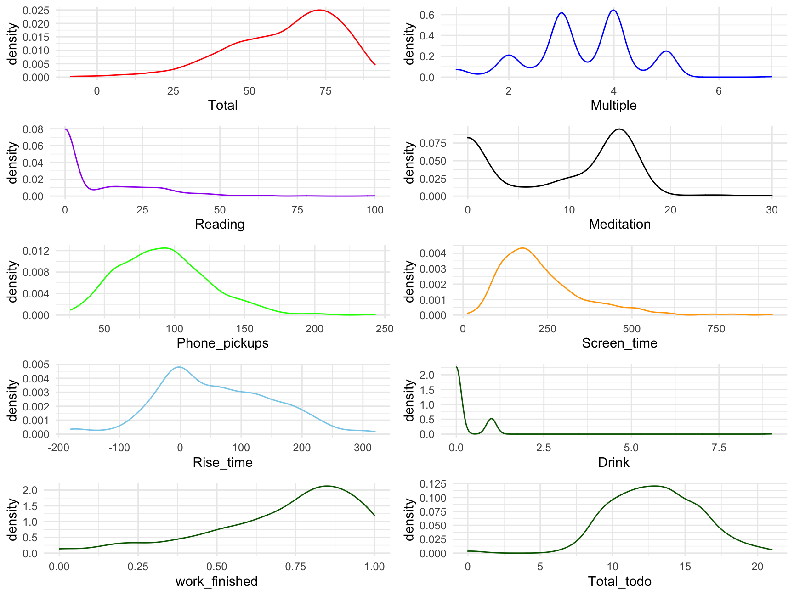

Self Evaluation Project
Andy
3/15/2022
library(lubridate)
library(gridExtra)
library(tidyverse)Read Data & Manipulation
all_dat = read.csv('/Volumes/Programming/Spring 2022/project/all_dat.csv')
# all_dat = read.csv('D:/Spring 2022/Project/all_dat.csv')
morning_rt = read.csv('/Volumes/Programming/personal/progress/morning_routine.csv')
colnames(all_dat) <- c('X', 'Name','Finished','Multiple','Phone_pickups',
'Screen_time','Created','Date','Drink','Key_words',
'Meditation','Mentality','Satisfaction',
'Reading','Productivity','Rise_time','Run','Social',
'Tech','Total','Total_todo','Work_done')
# Remove unnecessary columns & Modify some columns #new
all_dat <- all_dat %>%
dplyr::select(Date, everything(), Finished, Total_todo,-X,-Name,-Created, - Work_done) %>%
dplyr::mutate(work_finished = round(Finished/Total_todo,4),
Drink = lag(Drink),
Total = Total*100)%>%
tibble()
# Same for morning routine #new
morning_rt <- morning_rt %>%
dplyr::mutate(Date = strptime(as.character(morning_rt$Date), "%m/%d/%Y"),
Date = format(Date, "%m/%d/%Y"),
morning_phone = rise_time_check, # modify column name
night_phone = before_sleep_check) %>%
dplyr::select(Date, everything(), -c(X, level_0, index,
rise_time_check, before_sleep_check)) %>%
tibble()
# merge morning_rt with all_dat
all_morning_rt <- merge(morning_rt, all_dat,by="Date", all.x=T) %>%
dplyr::mutate(Date = mdy(Date),
work_finished_mr_exc =
round((Finished-total_checked)/(Total_todo-6),4)) %>%
# work_finished_mr_exc: this variable excludes morning routine
# tasks for more accurate statistical analysis.
dplyr::select(-c(rise_time_min)) %>% # redundant
dplyr::filter(work_finished_mr_exc <= 1 & work_finished_mr_exc >0) %>%
arrange(desc(Date))
# Drop Name & Created column
dat_date = filter(all_dat, Date!=0) # Exclude wrong date format
# Only include multiple-related(social, tech, satisfaction, overall, etc)
# Multiple data length: 53
multiple_dat = filter(all_dat, Productivity!=0)Distribution for the main variables
p1 <- ggplot(data = all_dat, alpha=.5) +
geom_density( aes(Total), color = 'red')
p2 <- ggplot(data = all_dat) +
geom_density( aes(work_finished), color = 'blue')
p3 <- ggplot(data = all_dat, alpha=.5)+
geom_density( aes(Reading), color = 'purple')
p4 <-ggplot(data = all_dat, alpha=.5)+
geom_density(aes(Meditation), color = 'black')
p5 <- ggplot(data = all_dat, alpha=.5)+
geom_density(aes(Phone_pickups), color = 'green')
p6 <- ggplot(data = all_dat, alpha=.5)+
geom_density(aes(Screen_time), color = 'orange')
p7 <- ggplot(data = all_dat, alpha=.5)+
geom_density(aes(Rise_time), color = 'skyblue')
p8 <- ggplot(data = all_dat, alpha=.5)+
geom_density(aes(Drink), color = 'darkgreen')
grid.arrange(p1, p2, p3,p4,p5,p6,p7,p8, nrow = 4)
How important is my Morning Routine?
Test how many checked morning routines affect the outcome of the day
- The morning routine tasks:
- Not touching my phone for at least 30 minutes the night before
- Not touching my phone for an hour after I wake up
- Exercise
- Meditation
- Reading
- Morning journal
# see how number of morning routine checks affects the Total %
ggplot(filter(all_morning_rt, total_checked != 0)) +
geom_density(aes(Total))+
facet_wrap(~total_checked)+
labs(title = "Morning Routine checked & \nTotal %")
# see how number of morning routine checks affects the total todo lists checked
ggplot(filter(all_morning_rt, total_checked != 0)) +
geom_density(aes(work_finished_mr_exc))+
facet_wrap(~total_checked)+
labs(title = "Morning Routine checked & \n todo lists finished(excluding morning routine tasks)")
Linear Regression
Meditation with all_dat
##
## Call:
## lm(formula = Meditation ~ Multiple + Phone_pickups + Screen_time +
## Drink + Reading + Rise_time + Total_todo + Total + work_finished,
## data = all_dat)
##
## Residuals:
## Min 1Q Median 3Q Max
## -11.4623 -2.7351 0.2876 2.7322 14.7539
##
## Coefficients:
## Estimate Std. Error t value Pr(>|t|)
## (Intercept) -27.961058 2.169727 -12.887 < 2e-16 ***
## Multiple -1.789023 0.295170 -6.061 2.84e-09 ***
## Phone_pickups 0.056970 0.007448 7.649 1.22e-13 ***
## Screen_time 0.011465 0.002057 5.575 4.26e-08 ***
## Drink 0.393147 0.366119 1.074 0.283
## Reading -0.093350 0.015899 -5.871 8.34e-09 ***
## Rise_time 0.045977 0.003777 12.174 < 2e-16 ***
## Total_todo -0.127904 0.077838 -1.643 0.101
## Total 0.699692 0.039675 17.636 < 2e-16 ***
## work_finished -13.114495 2.148972 -6.103 2.23e-09 ***
## ---
## Signif. codes: 0 '***' 0.001 '**' 0.01 '*' 0.05 '.' 0.1 ' ' 1
##
## Residual standard error: 4.259 on 455 degrees of freedom
## (4 observations deleted due to missingness)
## Multiple R-squared: 0.6456, Adjusted R-squared: 0.6386
## F-statistic: 92.08 on 9 and 455 DF, p-value: < 2.2e-16Multiple with multiple_dat
- Multiple data length: 50 +
multiple_tail <- lm(Multiple ~ Phone_pickups+ Screen_time+ Drink+ Meditation+
Reading+ Rise_time+ Total_todo +
work_finished + Total,
data = multiple_dat)
summary(multiple_tail)##
## Call:
## lm(formula = Multiple ~ Phone_pickups + Screen_time + Drink +
## Meditation + Reading + Rise_time + Total_todo + work_finished +
## Total, data = multiple_dat)
##
## Residuals:
## Min 1Q Median 3Q Max
## -0.96722 -0.29884 0.00562 0.30775 1.12087
##
## Coefficients:
## Estimate Std. Error t value Pr(>|t|)
## (Intercept) 1.1831495 0.8536405 1.386 0.1707
## Phone_pickups 0.0035841 0.0026299 1.363 0.1779
## Screen_time -0.0015665 0.0007663 -2.044 0.0452 *
## Drink 0.0266969 0.1679398 0.159 0.8742
## Meditation -0.0179650 0.0167935 -1.070 0.2889
## Reading -0.0048266 0.0094516 -0.511 0.6114
## Rise_time 0.0029511 0.0017244 1.711 0.0920 .
## Total_todo -0.0218439 0.0249253 -0.876 0.3842
## work_finished 2.3018931 0.8694485 2.648 0.0103 *
## Total 0.0147359 0.0181659 0.811 0.4204
## ---
## Signif. codes: 0 '***' 0.001 '**' 0.01 '*' 0.05 '.' 0.1 ' ' 1
##
## Residual standard error: 0.5052 on 62 degrees of freedom
## Multiple R-squared: 0.7615, Adjusted R-squared: 0.7268
## F-statistic: 21.99 on 9 and 62 DF, p-value: 3.672e-16Multiple with all_dat
- Multiple data length: 450 +
# Multiple data all
multiple_all <- lm(Multiple ~ Phone_pickups+ Screen_time+ Drink+ Meditation+
Reading+ Rise_time+ Run + Total_todo + Total ,
data = all_dat)
summary(multiple_all)##
## Call:
## lm(formula = Multiple ~ Phone_pickups + Screen_time + Drink +
## Meditation + Reading + Rise_time + Run + Total_todo + Total,
## data = all_dat)
##
## Residuals:
## Min 1Q Median 3Q Max
## -2.44676 -0.41574 -0.02224 0.41723 1.96863
##
## Coefficients:
## Estimate Std. Error t value Pr(>|t|)
## (Intercept) -0.1395938 0.3263947 -0.428 0.669082
## Phone_pickups 0.0042987 0.0011007 3.906 0.000108 ***
## Screen_time -0.0005943 0.0003013 -1.972 0.049184 *
## Drink -0.0303751 0.0550682 -0.552 0.581498
## Meditation -0.0439626 0.0065194 -6.743 4.68e-11 ***
## Reading -0.0103842 0.0023719 -4.378 1.49e-05 ***
## Rise_time 0.0036409 0.0004950 7.355 8.89e-13 ***
## Run 0.6966262 0.2604207 2.675 0.007740 **
## Total_todo -0.0148290 0.0113576 -1.306 0.192330
## Total 0.0602246 0.0040551 14.852 < 2e-16 ***
## ---
## Signif. codes: 0 '***' 0.001 '**' 0.01 '*' 0.05 '.' 0.1 ' ' 1
##
## Residual standard error: 0.6485 on 458 degrees of freedom
## (1 observation deleted due to missingness)
## Multiple R-squared: 0.5675, Adjusted R-squared: 0.559
## F-statistic: 66.77 on 9 and 458 DF, p-value: < 2.2e-16Linear Regression Summary for Work_done (all_dat)
#################### Linear Regression Work_done (all_dat) #####################
# Work done
work_finished_all <- lm(work_finished ~ Multiple + Phone_pickups + Screen_time +
Drink + Meditation + Reading + Rise_time + Run +
Total_todo,
data = all_dat)
summary(work_finished_all)##
## Call:
## lm(formula = work_finished ~ Multiple + Phone_pickups + Screen_time +
## Drink + Meditation + Reading + Rise_time + Run + Total_todo,
## data = all_dat)
##
## Residuals:
## Min 1Q Median 3Q Max
## -0.36590 -0.08969 0.00675 0.09519 0.42490
##
## Coefficients:
## Estimate Std. Error t value Pr(>|t|)
## (Intercept) 1.533e-01 5.673e-02 2.702 0.00715 **
## Multiple 1.077e-01 8.396e-03 12.829 < 2e-16 ***
## Phone_pickups 2.113e-04 2.344e-04 0.901 0.36787
## Screen_time -1.754e-05 6.200e-05 -0.283 0.77735
## Drink -5.427e-02 1.186e-02 -4.575 6.15e-06 ***
## Meditation 1.148e-02 1.069e-03 10.739 < 2e-16 ***
## Reading 2.363e-03 4.568e-04 5.174 3.44e-07 ***
## Rise_time -1.531e-04 8.000e-05 -1.914 0.05624 .
## Run -8.271e-02 5.705e-02 -1.450 0.14783
## Total_todo 6.341e-03 2.502e-03 2.534 0.01161 *
## ---
## Signif. codes: 0 '***' 0.001 '**' 0.01 '*' 0.05 '.' 0.1 ' ' 1
##
## Residual standard error: 0.1409 on 455 degrees of freedom
## (4 observations deleted due to missingness)
## Multiple R-squared: 0.6449, Adjusted R-squared: 0.6379
## F-statistic: 91.83 on 9 and 455 DF, p-value: < 2.2e-16Actual vs Prediction Visualization for Work_done (all_dat)
all_dat$pred_work_finished <- predict(work_finished_all, newdata = all_dat)
# Explanatory variable: work_finished
ggplot(data = all_dat, aes(x = pred_work_finished, y = work_finished)) +
geom_point(alpha = 0.5, color = "darkgray") +
geom_smooth(color = "darkblue") +
geom_line(aes(x = work_finished,
y = work_finished), # Plotting the line, y = x
color = "red", linetype = 2) +
coord_cartesian( xlim = c(0, 1),
ylim = c(0, 1) ) # Limits the range of the## `geom_smooth()` using method = 'loess' and formula 'y ~ x'
Actual vs Prediction Residual Visualization for Work_done (all_dat)
# graph for legibility# Plot of residual error as a function of prediction
ggplot(data = all_dat, aes(x = pred_work_finished,
y = pred_work_finished - work_finished)) +
geom_point(alpha = 0.2, color = "darkgray") +
geom_smooth(color = "darkblue") +
geom_line(aes(x = pred_work_finished,
y = 0), # Plotting the line, y = 0
color = "red", linetype = 2) +
ylab("residual error (prediction - actual)")## `geom_smooth()` using method = 'loess' and formula 'y ~ x'Testing Normality
library(dplyr)
set.seed(1234)
dplyr::sample_n(all_dat, 10)## # A tibble: 10 × 20
## Date Finished Multiple Phone_pickups Screen_time Drink Key_words Meditation Mentality
## <chr> <dbl> <dbl> <dbl> <dbl> <dbl> <chr> <dbl> <dbl>
## 1 08/11/2… 5 3 144 167 0 0 0 0
## 2 10/17/2… 15 3 123 200 0 0 14 0
## 3 01/10/2… 10 3.6 98 84 0 0 15 3
## 4 1/12/21 9 3 74 304 0 0 15 0
## 5 1/31/21 4 3 61 440 0 0 0 0
## 6 12/21/2… 8 3.6 107 314 0 0 0 4
## 7 02/20/2… 15 4 97 132 0 0 15 0
## 8 01/26/2… 10 4 126 149 0 0 15 4
## 9 01/03/2… 5 2.6 80 308 0 0 10 3
## 10 12/16/2… 8 3.4 97 201 0 0 15 3
## # … with 11 more variables: Satisfaction <dbl>, Reading <dbl>, Productivity <dbl>,
## # Rise_time <dbl>, Run <dbl>, Social <dbl>, Tech <dbl>, Total <dbl>, Total_todo <dbl>,
## # work_finished <dbl>, pred_work_finished <dbl># The central limit theorem tells us that no matter what distribution things
# have, the sampling distribution tends to be normal if the sample is large
# enough (n > 30).
# The R function shapiro.test() can be used to perform the Shapiro-Wilk test
# of normality for one variable (univariate):
shapiro.test(all_dat$Total)##
## Shapiro-Wilk normality test
##
## data: all_dat$Total
## W = 0.94474, p-value = 3.276e-12Determining Distributions
- Multiple(fit.normal)
library(fitdistrplus)
library(logspline)
# The kurtosis and squared skewness of your sample is plotted as a blue point
# named "Observation".
descdist(all_dat$Multiple, discrete = FALSE)
## summary statistics
## ------
## min: 1 max: 7
## median: 3.4
## mean: 3.440085
## estimated sd: 0.9892223
## estimated skewness: -0.2591348
## estimated kurtosis: 3.06537descdist(all_dat$Screen_time, discrete = FALSE)
## summary statistics
## ------
## min: 14 max: 915
## median: 201
## mean: 234.2345
## estimated sd: 127.2488
## estimated skewness: 1.570153
## estimated kurtosis: 6.655322wf <- c(na.omit(all_dat$work_finished))
descdist(wf, discrete = FALSE)
## summary statistics
## ------
## min: 0 max: 1
## median: 0.7778
## mean: 0.7200835
## estimated sd: 0.2341082
## estimated skewness: -1.071923
## estimated kurtosis: 3.642819#fit.beta <- fitdist(wf, 'beta', method = "mme")
# method = "mme": Moment matching estimation consists in equalizing theoretical
# and empirical moments.
#fit.gamma <- fitdist(all_dat$Screen_time, "gamma")
fit.normal <- fitdist(all_dat$Multiple, "norm")
#plot(fit.beta)
#plot(fit.gamma)
plot(fit.normal)